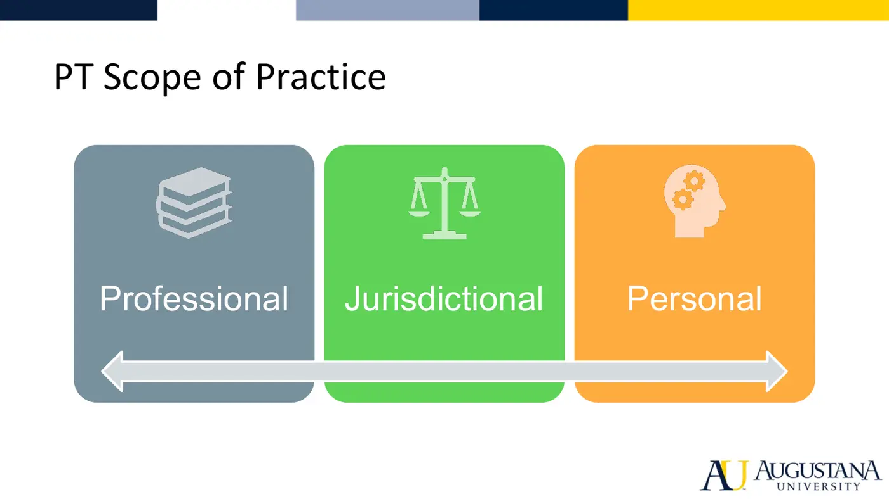
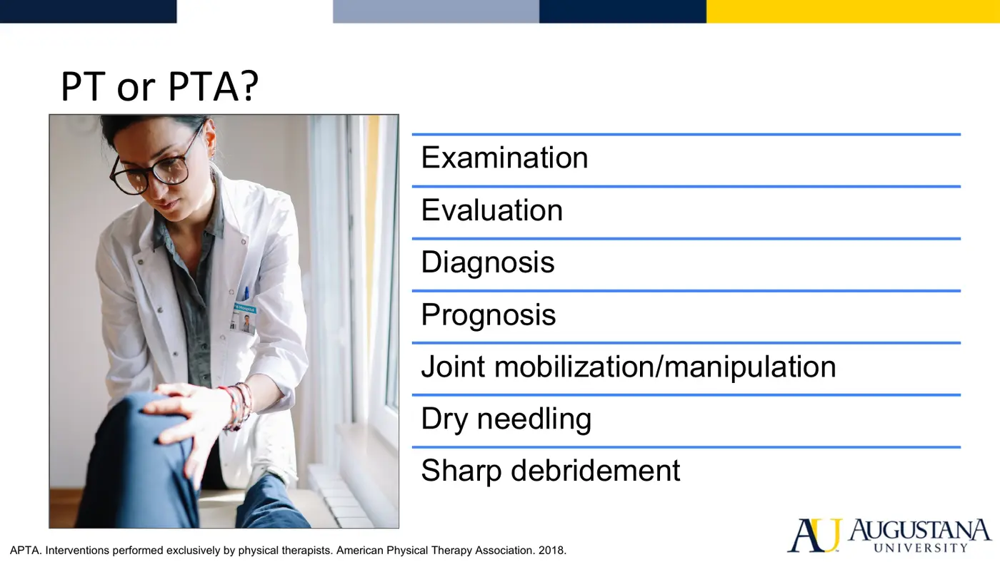
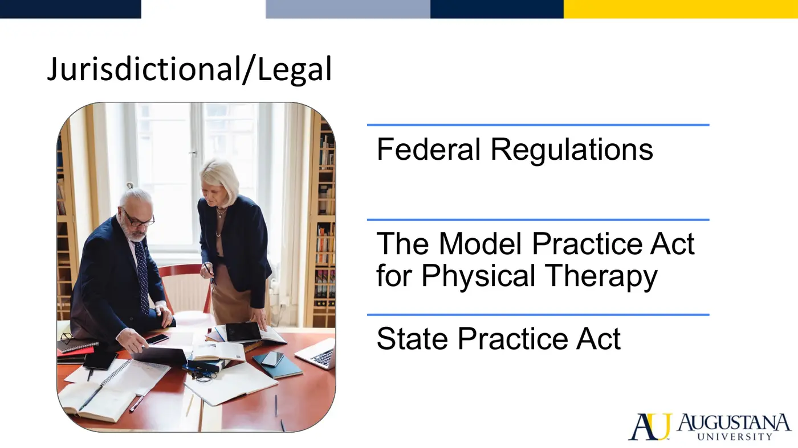
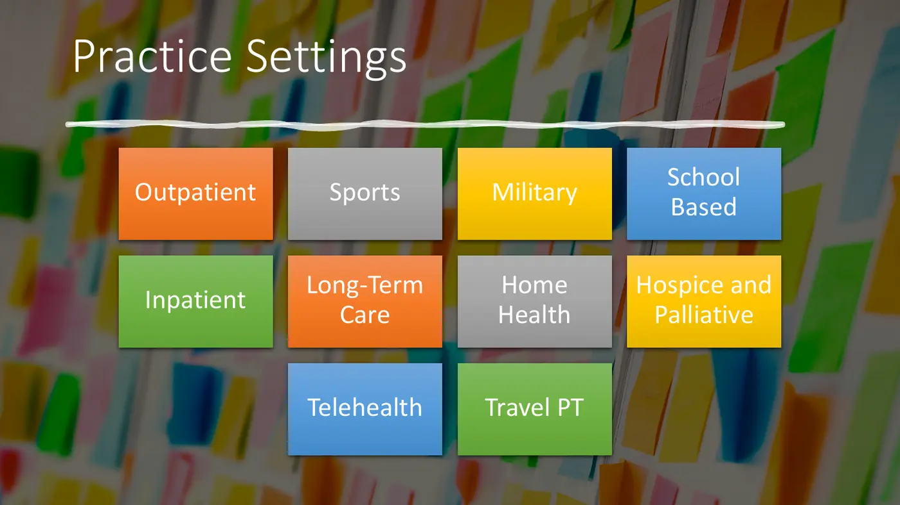
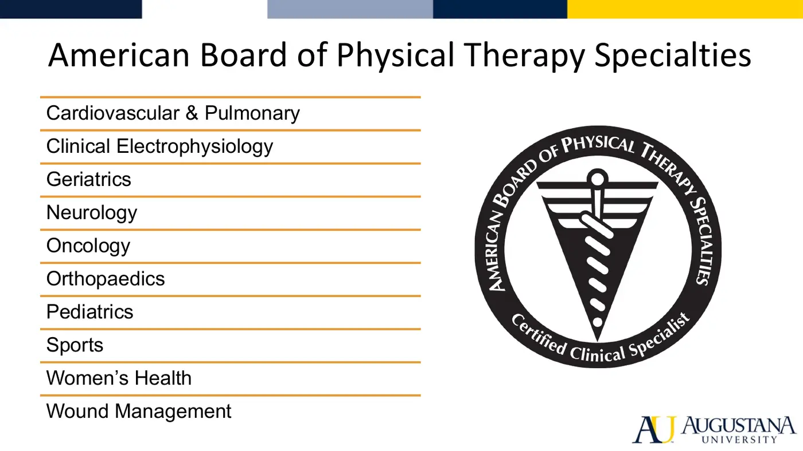
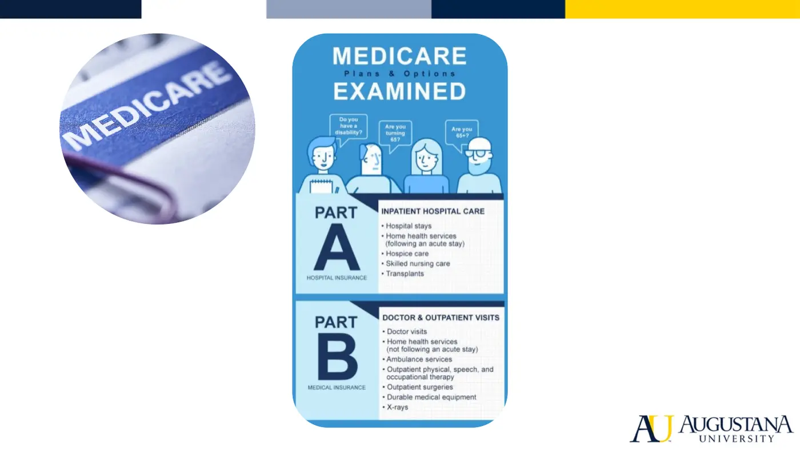
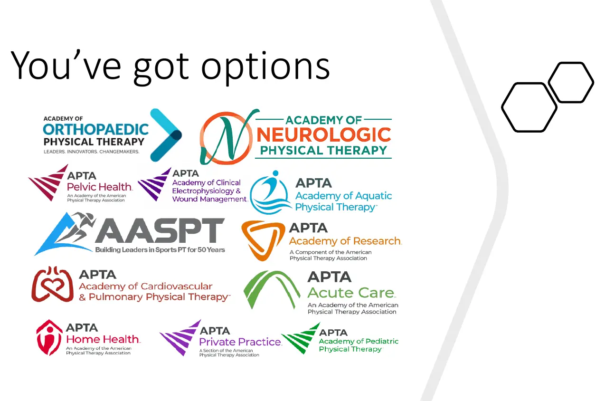

Courses › Professional Competencies I › Module 3
Professional Competencies I · 6811
Module 3 — Scope of Practice & Delegation
Topics: 3.1 PT & PTA Scope of Practice • 3.2 Practice Settings • Sync: Ethics Cases
📖 How to Use These Notes
- Best used with the lecture playing — keep these open, follow along, and add your own notes as you watch
- Lecture banners mark the start of each topic and run in the same order as the videos
- 🎙 Callouts = direct insights from the instructor's transcript
- ★ Tips = exam-relevant content or things the instructor told you to prepare
- Figures are taken directly from the module's slide decks
- Each topic ends with its own Quick-Reference Glossary
- Written from last year's recordings — if a lecture has been re-recorded or resequenced, Canvas wins
- Watch this module's lecture videos in your own Canvas module — video links are cohort-specific
TOPIC 3.1
PT and PTA Scope of Practice
1. The Guiding Question: What Am I Allowed to Do?
- Can I treat over the phone? Manipulate a spine? Dry needle? Do I need a physician's script? Can the PTA on my team do manual therapy, progress a plan, re-evaluate? These are real week-one-of-practice questions.
- APTA's Standards: PTs pursue excellence in a scope that includes optimizing physical function, health, quality of life, and well-being across the lifespan and improving population health — deliberately broad, so the real boundaries come from three sources.
2. The Three Components of Scope

| Component | What it means | Examples from lecture |
|---|---|---|
| Professional | Your education and training: the body of knowledge (evidence), your educational preparation, and fit with the practice framework/societal need | Direct access rests on screening/red-flag training (why the DPT exists); dry-needling competency analysis found ~86% of required knowledge is already in entry-level PT education; PTAs are not trained in examination-level clinical reasoning |
| Jurisdictional | Federal law > state law > profession. FSBPT publishes the Model Practice Act, but each state's own practice act rules | PA: direct access needs 2 years' experience + expires after 30 days. TX: no direct access. CA: dry needling prohibited. WA: heavy manipulation restrictions (chiropractic lobbying). A silent act = gray zone, and gray is risky if you're sued |
| Personal | What you've added beyond entry-level — and your honest confidence | Con-ed for the last ~14% of dry needling; certifications, residencies, specialization (e.g., sports specialist exam + emergency response training for sideline coverage). If you don't feel competent, don't do it |
3. PT vs PTA

| PT only (per APTA) | The gray zones |
|---|---|
| Examination, evaluation, diagnosis, prognosis | Some states' laws are silent on PTA mobilization — where no law prohibits it, practice varies |
| Joint mobilization / manipulation | Professional recommendation ≠ jurisdictional requirement |
| Dry needling | Use the APTA direction & supervision algorithms: when to direct to the PTA, which interventions, and how to supervise |
| Sharps debridement (wound care) |

- Scope is continually evolving — societal needs, professional development, law changes, research, technology, and the health delivery system all move it. Professional advocacy (letters and meetings with legislators) is how the profession expands what it may legally do.
4. Assignment — Know Your State Practice Act
Harmonize assignment: investigate your state's act
- Licensure requirements • temporary licensure at graduation • PTA supervision requirements • direct-access conditions and limits • manipulation rules • dry-needling status • PT Compact membership and what it means for you.
- Post your findings on Harmonize and reply to a peer. Look yours up at the FSBPT site and the PT Compact map.
Topic 3.1 — Quick-Reference Glossary
| Term | Definition |
|---|---|
| Scope of practice | What a licensed professional is authorized and trained to do; evolves constantly |
| Professional / jurisdictional / personal | The three components that together define YOUR scope |
| FSBPT | Federation of State Boards of PT — publishes the Model Practice Act |
| State practice act | Your state's law on what PTs/PTAs may do — trumps education and con-ed |
| Direct access | Seeing patients without referral; state-dependent conditions |
| PT-only interventions | Examination/evaluation/diagnosis/prognosis, joint mob/manip, dry needling, sharps debridement |
| Direction & supervision algorithms | APTA's guides for delegating to and supervising the PTA |
| PT Compact | Interstate licensure compact easing multi-state practice |
TOPIC 3.2
Physical Therapy Practice Settings
1. The Map


- 35,000+ board-certified specialists across ten areas: cardiovascular & pulmonary, clinical electrophysiology, geriatrics, neurology, oncology, orthopaedics, pediatrics, sports, women's health, wound management. Specialization layers on top of nearly any setting.
2. Setting by Setting (with the lecture's pros and cons)
| Setting | What it is | Pros / Cons |
|---|---|---|
| Outpatient | Care without hospital admission; private-, physician- (POPT — APTA opposes), or hospital-owned; referral or direct access; insurance-, cash-, or pro-bono-based | + Variety, active patients / − insurance-driven, productivity demands, lower pay |
| Sports | Private practice or team-based (pro, NCAA, Olympic) | + Exciting, travel, high-level athletes / − brutal in-season schedule, hard on family life |
| Military | Active duty or civilian contractor | + Active population, government benefits / − rank politics, year-to-year contracts |
| School-based | ~7,000 PTs; under IDEA and Every Student Succeeds Act via IEPs | + Follow kids across grades, rewarding / − IEP red tape |
| Inpatient acute | Hospital floors, ICU, even ED; early mobilization drives outcomes; step-down and post-op | + Consistent 8–5 schedule, higher pay / − complex patients, short relationships |
| Inpatient rehab (IRF) | Dedicated facility post-ICU/step-down; ~3 hours of therapy per day (PT/OT/speech) required | Longer stays, intensive interdisciplinary care |
| Long-term care | SNF, nursing home, assisted living; Medicare-driven, physician-prescribed medical necessity | + Schedule, pay, long-term relationships / − Medicare red tape, funding cuts, uncertainty |
| Home health | For homebound patients; often post-discharge; OASIS documentation | + Low productivity pressure, among the best pay / − travel, improvising equipment, homes vary. 'Mobile outpatient' (often cash-pay, Part B) is a separate model |
| Hospice & palliative | Palliative = serious illness, possibly still curative; hospice = end of life (~≤6 months), comfort-focused | + Deeply rewarding / − emotionally taxing |
| Telehealth | Reimbursement expanded since COVID; often cash or employer-paid; strong for rural access | + Flexibility, work from home / − reimbursement gaps, no hands-on, tech barriers |
| Travel PT | Agency places you on 1–2-year-ish contracts nationwide | + Travel, better pay / − no control of location or setting; facilities that couldn't hire locally |
3. Who Pays Shapes Where PTs Work

- Medicare Part A → inpatient stays and home health. Part B → outpatient. Private insurers largely model Medicare. Medicare requires physician sign-off on the plan of care, must be medically necessary — maintenance or anything resembling personal training is typically not covered.

Topic 3.2 — Quick-Reference Glossary
| Term | Definition |
|---|---|
| POPT | Physician-owned PT service — APTA opposes (referral-for-profit concern) |
| Direct access vs referral | How patients reach outpatient care; state-dependent |
| IEP / IDEA / ESSA | Individualized Education Plan and the federal acts enabling school-based PT |
| IRF 3-hour rule | Inpatient rehab facilities require ~3 h therapy/day across disciplines |
| OASIS | Home-health documentation system |
| Palliative vs hospice | Serious illness with possible curative intent vs end-of-life comfort care |
| Medicare Part A / B | Inpatient + home health / outpatient payment |
| ABPTS | American Board of Physical Therapy Specialties — ten certification areas |
MODULE 3
Sync — Ethics Cases & the RIPS Model
Real Cases, Real Consequences
- Group case work applies Module 2's values and Code to real fraud prosecutions: Miami PTA convicted of fraudulent claims • PT convicted of paying healthcare kickbacks • Drayer PT Institute False Claims Act settlement • Hertel & Brown founders charged. For your assigned case: summarize it, then map which of the nine core values and which of the eight Code principles were compromised, with examples.
The RIPS Model of Ethical Decision-Making
- Swisher, Arslanian & Davis (2005): the Realm–Individual Process–Situation model. It fixes two gaps in older frameworks: organizational/societal issues getting lost in individual-level analysis, and outcomes being under-weighted. Analyze the realm (individual, organizational, societal), the individual process, and the situation, then walk four decision-making steps. The full article is in this course's folders.
- The State Practice Act breakout pairs with the Topic 3.1 assignment — licensure, supervision, direct access, manipulation, dry needling, and Compact status for your state.
▶ Required materials (from the Canvas pages and assignment)
- APTA: PT Scope of Practice — Topic 3.1 assigned material
- PTA Direction and Supervision Algorithms — Topic 3.1 assigned material
- FSBPT — find your state practice act — required for the Harmonize assignment
- PT Compact map — required for the Harmonize assignment